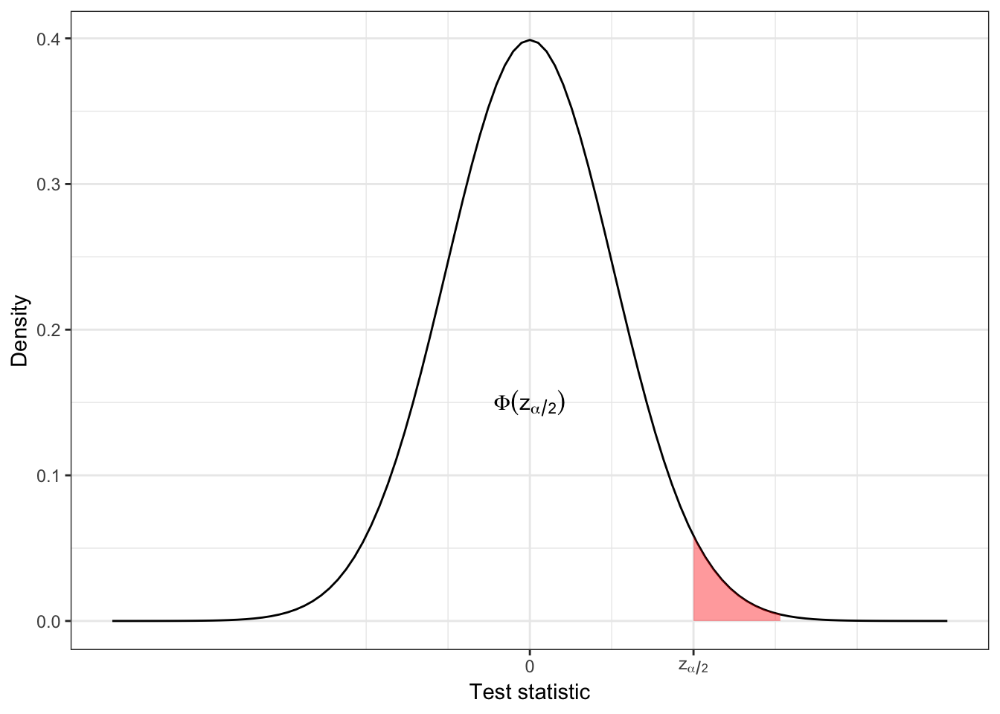
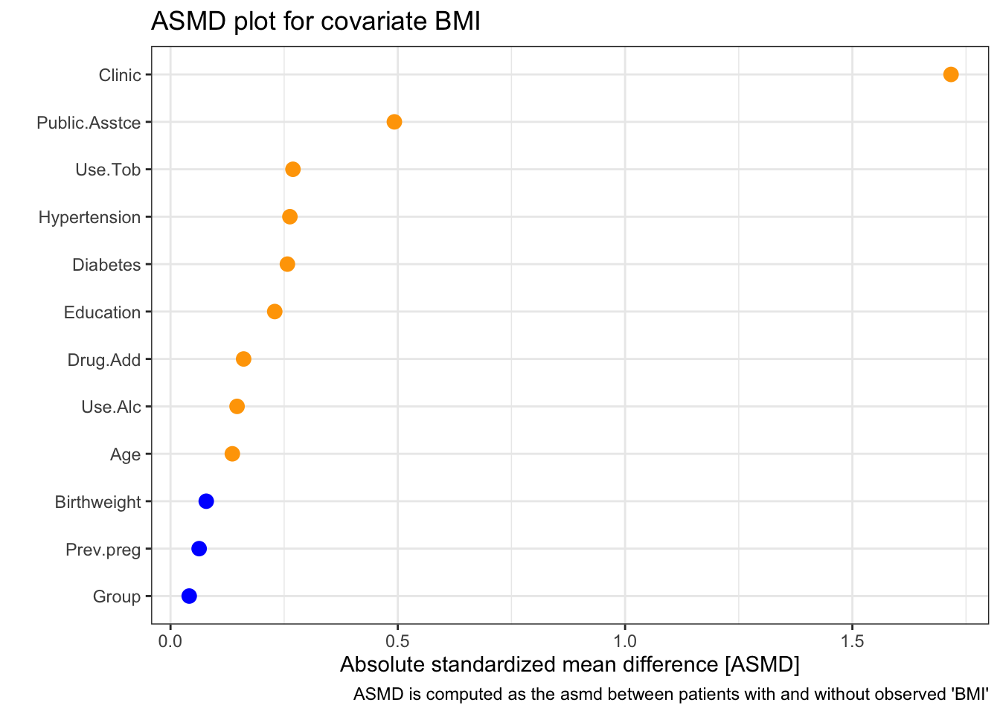
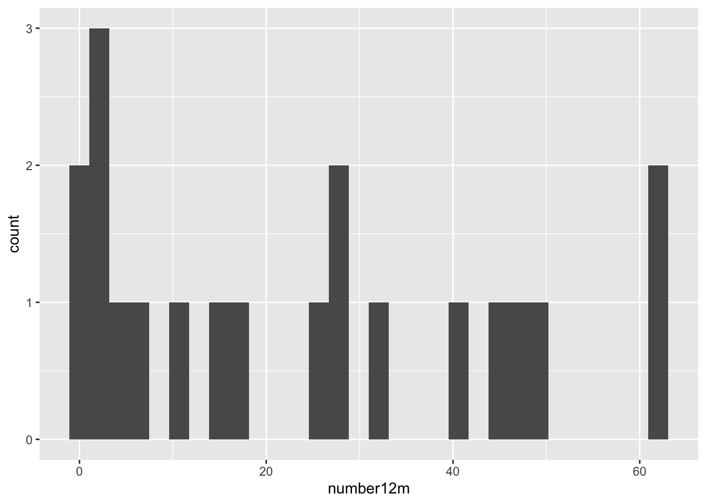

B Computer Practical 2 - Allocation & Analysis
This computer practical will cover two main parts:
Health warning!
This practical, particularly the allocation section, is designed to help you investigate the behaviour of the various methods we’ve been looking at. There are lots of things we do here that you couldn’t do in a real trial. For example, you wouldn’t be able to plot the baseline covariates, since you wouldn’t have them all at the start of the allocation process. You also wouldn’t be re-do the allocation lots of times, because in most cases the participants join the trial (and are allocated) sequentially.
Preliminaries
The idea is that you spend roughly half the time on each part, but there is probably more content for allocation. It might be sensible to work through some of the allocation exercises, jump ahead to analysis after a while, then go back to allocation if you have time.
You will need a lot of the techniques covered in this practical for your summative assignments, so consider it a sort of informal formative assignment to finish it if you don’t in class. Or, at the very least, you might need to return to it while working on your summative assignments.
There will be a mixture of full solutions, examples of possible solutions and example code to adapt. If you’re not sure how to do something, please ask!
In the example code, I have used the same names for most objects. In order to store your results and avoid confusion, it will be sensible to name things intelligently! For example, suffix each allocation data frame so that you know which allocation method you used. Create an R file with the commands in that you use, so that you can easily replicate your work.
R practicalities
There are many, many packages in R that implement methods for designing and analysing clinical trials (see a list at CRAN task view). We will look at some of these, and will also write our own code for some tasks. Remember that to install a package, you can do
If you have problems running R on your laptop, or on the university machines, the most foolproof way might be to use Github codespaces (thanks to Louis Aslett, who developed this for Data Science and Statistical Computing II). You may be familiar with this approach if you did Bayesian Computational Modelling III.
An advantage of this is that you can open the same codespace (the same instance of R) from any computer, so if you plan to work on things (for example your summative assignment, which will involve some R) from more than one computer, this might be ideal.
This requires you to have a github account (you can sign up for free here) and there is a short guide to creating a github account here.
B.1 Allocation
We’ll make use of several packages in this section. Installing them all now should hopefully prevent it from disrupting your flow! We’ll load them as we go along.
Notice that where there are code snippets like this one that you want to copy directly, you can hover your cursor in the top right of the code box and a ‘copy’ icon will appear.
install.packages(c("medicaldata", "ggplot2", "gtsummary", "Minirand",
"blockrand", "dplyr", "randomizeR"))B.1.1 Licorice gargle dataset
To work with allocation, we will use the licorice_gargle dataset from the package medicaldata, which you can find by
You can find out about the dataset by looking at the help file
and at this website, and if you’re feeling really keen you can even read the original paper: Ruetzler et al. (2013) (but please don’t do any of that now!).
Exercise B.1 Of the 19 columns, how many are baseline characteristics that we could use in the allocation?
Click for solution
Solution. In this dataset the baseline characteristics are helpfully prefixed by preOp, so there are seven baseline characteristics.
## [1] "preOp_gender" "preOp_asa" "preOp_calcBMI" "preOp_age"
## [5] "preOp_mallampati" "preOp_smoking" "preOp_pain"In order to be able to work with the dataset, we need to convert several of the columns to factor variables (you can see by looking at the structure str(licorice_gargle) that all columns are numeric to begin with), so run the following code to convert the necessary columns to factors, and to restrict the dataset to only the columns we’re interested in.
lic_garg = licorice_gargle[ ,1:8]
# vector of names of columns to be coerced to factor
cols <- c("preOp_gender", "preOp_asa",
"preOp_mallampati", "preOp_smoking", "preOp_pain", "treat")
# convert each of those columns to factors
lic_garg[cols] <- lapply(lic_garg[cols], factor)
# Check the result:
str(lic_garg)## 'data.frame': 235 obs. of 8 variables:
## $ preOp_gender : Factor w/ 2 levels "0","1": 1 1 1 1 1 1 1 1 1 1 ...
## $ preOp_asa : Factor w/ 3 levels "1","2","3": 3 2 2 2 1 2 3 2 3 3 ...
## $ preOp_calcBMI : num 33 23.7 26.8 28.4 30.4 ...
## $ preOp_age : num 67 76 58 59 73 61 66 61 83 69 ...
## $ preOp_mallampati: Factor w/ 4 levels "1","2","3","4": 2 2 2 2 1 3 1 2 1 2 ...
## $ preOp_smoking : Factor w/ 3 levels "1","2","3": 1 2 1 1 2 1 1 1 1 3 ...
## $ preOp_pain : Factor w/ 2 levels "0","1": 1 1 1 1 1 1 1 1 1 1 ...
## $ treat : Factor w/ 2 levels "0","1": 2 2 2 2 2 2 2 2 2 2 ...B.1.1.1 Demographic tables
For every allocation, we’ll want to see a summary table of how the patients are distributed between the groups. In this practical we’ll use the function tbl_summary from gtsummary, but there are plenty of other ways to create nice tables around clinical trials (for example the package table1 and atable).
Notice that the licorice gargle data contains the allocation used in the trial, so we can create a table summarising the participants in each group.
| Characteristic | 0 N = 1171 |
1 N = 1181 |
|---|---|---|
| preOp_gender | ||
| 0 | 73 (62%) | 69 (58%) |
| 1 | 44 (38%) | 49 (42%) |
| preOp_asa | ||
| 1 | 19 (16%) | 22 (19%) |
| 2 | 67 (57%) | 67 (57%) |
| 3 | 31 (26%) | 29 (25%) |
| preOp_calcBMI | 26.1 (22.4, 28.1) | 25.7 (22.7, 28.6) |
| preOp_age | 63 (45, 68) | 61 (48, 68) |
| preOp_mallampati | ||
| 1 | 31 (26%) | 39 (33%) |
| 2 | 69 (59%) | 66 (56%) |
| 3 | 16 (14%) | 13 (11%) |
| 4 | 1 (0.9%) | 0 (0%) |
| preOp_smoking | ||
| 1 | 45 (38%) | 45 (38%) |
| 2 | 36 (31%) | 36 (31%) |
| 3 | 36 (31%) | 37 (31%) |
| preOp_pain | ||
| 0 | 115 (98%) | 118 (100%) |
| 1 | 2 (1.7%) | 0 (0%) |
| 1 n (%); Median (Q1, Q3) | ||
Notice that we can also save this as an object and access the individual sub-tables, for example
rb_tab = randbalance(
trt = lic_garg$treat,
covmat = lic_garg[,-8],
ntrt=2,
trtseq = c("0", "1"))
rb_tab$preOp_gender##
## trt 0 1
## 0 73 44
## 1 69 49There are also packages with functions to output these demographic tables formatted for use in latex documents, for example atable.
B.1.1.2 Binning continuous variables
Before we can use any of our allocation methods, we’re going to need to bin the two numeric variables preOp_age and preOp_calcBMI. The sort of information we’d be likely to get pre-trial (the point at which we need to decide on the bins) would be
- The study was open to all adults (aged 18+), but
preOp_agewas likely to centre around aged 60. preOp_BMIwas expected to have mean 26 and standard deviation around 4.5.
Exercise B.2 Bin the two variables preOp_age and preOp_calcBMI to convert them into factor variables BMI and age.
Investigate how the bins you have chosen split the actual data - are you pleased with your choices?
In the solutions we’ll create a new data frame lg_df with the two new factor variables instead of the original two numeric variables. It might be helpful to you if you make sure your objects and columns are named the same (or else you may need to alter code further into the practical)
Click for solution
Solution. These solutions show you one way to create such factor variables, but if you choose different bins that’s fine!
Based on the information given, one reasonable split for preOp_age would be \(<50,\;50-70\) and \(>70\), in which case we could do
lic_garg$age[lic_garg$preOp_age < 50] <- "Under 50"
lic_garg$age[lic_garg$preOp_age >= 50 & lic_garg$preOp_age < 70] <- "50 to 70"
lic_garg$age[lic_garg$preOp_age >= 70] <- "70 plus"
lic_garg$age = factor(lic_garg$age, levels = c("Under 50", "50 to 70", "70 plus"))We can see how the data fall into these categories:
##
## Under 50 50 to 70 70 plus
## 67 122 46These aren’t equal but we have a decent number in each group.
With the BMI measurement, we know that there are predefined boundaries between categories, so it might be sensible to use those. The boundary between ‘medium’ and ‘high’ is usually given as 25, so since that is near our given mean we could use that as the boundary.
lic_garg$BMI[lic_garg$preOp_calcBMI < 25] <- "medium_or_low"
lic_garg$BMI[lic_garg$preOp_calcBMI >= 25] <- "high"
lic_garg$BMI = factor(lic_garg$BMI, levels = c("medium_or_low", "high"))Again, we can see how the participants fall into these bins
##
## medium_or_low high
## 99 136and the split is fairly even.
Finally, we can select the columns we want from lic_garg to create lg_df
If you’ve chosen different bins, that’s fine! But it will help you if the column names and data frame names are the same as on this page.
B.1.1.3 A measure of imbalance
It will be useful to have a simple numerical summary of how imbalanced an allocation is. We will define the imbalance as in lectures,
\[D(n) = \lvert N_T\left(n\right) - N_C\left(n\right) \rvert \] This is pretty simple to define in R:
imbalance = function(
df, # participant data frame with allocation column included
alloc # name of allocation column
){
alloc_vec = as.factor(df[ ,names(df)==alloc])
alloc_lev = levels(alloc_vec) # how the treatment groups are coded
n1 = nrow(df[df[alloc]==alloc_lev[1],])
n2 = nrow(df[df[alloc]==alloc_lev[2],])
abs(n1-n2)
}Exercise B.3 Use the imbalance function above to find the imbalance in the allocation recorded in the lic_garg dataset.
B.1.2 Allocation methods
To mimic the way that participants are recruited sequentially in a trial (which is generally the case), the code for each type of allocation will work its way through the participant data frame, even though this might not be the most efficient way to produce the end result. For the more complex methods we’ll use packages. Feel free to write your own code for the simpler methods if you want to!
We’ll start by performing each method once with the whole dataset, and then go on to include baseline variables, and finally we’ll perform a simulation study.
B.1.2.1 Simple random allocation
In simple random allocation, each participant is allocated to one of the two trial arms with equal probability.
srs = function(
df, # DF should be the participant data frame.
# A column 'treat' will be added
levels = c("0", "1") # Levels of treat factor
){
n = nrow(df) # number of rows / participants
# Create a new column 'treat'
df$treat = rep(NA, n)
# work through the rows, randomly allocating patients with probably 1/2
for (i in 1:n){
df$treat[i] = sample(levels, size=1, prob = c(0.5, 0.5))
}
df$treat = as.factor(df$treat)
df
}Exercise B.4 Use the function srs above to allocate the patients in the licorice_gargle dataset to groups T or C.
Generate the balance table and imbalance and comment on them.
Click for solution
Solution. To allocate the patients, use
And to display the balance table
| Characteristic | C N = 1031 |
T N = 1321 |
|---|---|---|
| preOp_gender | ||
| 0 | 61 (59%) | 81 (61%) |
| 1 | 42 (41%) | 51 (39%) |
| preOp_asa | ||
| 1 | 14 (14%) | 27 (20%) |
| 2 | 68 (66%) | 66 (50%) |
| 3 | 21 (20%) | 39 (30%) |
| preOp_mallampati | ||
| 1 | 30 (29%) | 40 (30%) |
| 2 | 53 (51%) | 82 (62%) |
| 3 | 19 (18%) | 10 (7.6%) |
| 4 | 1 (1.0%) | 0 (0%) |
| preOp_smoking | ||
| 1 | 38 (37%) | 52 (39%) |
| 2 | 29 (28%) | 43 (33%) |
| 3 | 36 (35%) | 37 (28%) |
| preOp_pain | ||
| 0 | 102 (99%) | 131 (99%) |
| 1 | 1 (1.0%) | 1 (0.8%) |
| age | ||
| Under 50 | 30 (29%) | 37 (28%) |
| 50 to 70 | 52 (50%) | 70 (53%) |
| 70 plus | 21 (20%) | 25 (19%) |
| BMI | ||
| medium_or_low | 43 (42%) | 56 (42%) |
| high | 60 (58%) | 76 (58%) |
| 1 n (%) | ||
To find the imbalance, the command is
## [1] 29Since this uses the sample function, and we didn’t set a seed, you may well have got a different allocation (and therefore imbalance).
B.1.2.2 Randomly permuted blocks
We will do this with the package blockrand.
The function for generating RPB designs is also called blockrand. The default for the function blockrand is that it will randomly vary block length within \(\left\lbrace 2,\,4,\,6,\,8 \right\rbrace\).
Exercise B.5 Try playing around with the function blockrand, for example starting with
Can you generate an allocation for the licorice_gargle data (remember our data frame is now lg_df) and produce the balance table?
Click for solution
Solution. There are 235 rows/participants in lg_df, and to keep consistency we would like the levels of our treatment to be "T" and "C". Therefore we can do
Notice that this doesn’t have 235 rows: the blockrand function will always finish after a whole block.
Let’s add this to our participant data to create a new data frame lg_rpb:
# create the new data frame, a copy of lg_df
lg_rpb = lg_df
# Replace the original treat column with the RPB treatment column
# Using only the first 235 allocations
lg_rpb$treat = rpb_lg$treatment[1:235]Then we can generate the demographic table as before:
and calculate the imbalance
## [1] 1The package blockrand contains a function plotblockrand, which outputs PDFs of randomization cards, ready to be printed and put into envelopes!
B.1.2.3 Biased coin designs
We can write code for a biased coin design by adapting the srs function above, setting \(p=\frac{2}{3}\) by default as per Efron (1971).
biased_coin = function(
data,
levels = c("T", "C"),
p=2/3
){
Dn = 0 # starting value of imbalance
n = nrow(data)
alloc = rep(NA, n)
for (i in 1:n){
if (Dn==0){ # equally balanced
alloc[i] = sample(levels, size=1, prob=c(0.5, 0.5) )
} else if(Dn<0){ # More allocations to levels[2] up to this point
alloc[i] = sample(levels, size=1, prob=c(p, 1-p) )
} else if(Dn>0){ # More allocations to levels[1] up to this point
alloc[i] = sample(levels, size=1, prob=c(1-p, p) )
}
# Compute imbalance at this stage
alloc_to_n = alloc[1:i]
Dn = sum(alloc_to_n==levels[1]) - sum(alloc_to_n == levels[2])
}
data$treat = as.factor(alloc)
data
}Exercise B.6 Use the function biased_coin above to allocate patients to the two groups. Produce the demographic table and calculate the imbalance. Try this for some different values of p.
B.1.2.4 Urn designs
For the urn design, we will use the function udPar from the package randomizeR. We wrote this in lectures as \(UD\left(r,s\right)\), where
- \(r\) is the number of balls for each treatment group in the urn to begin with
- \(s\) is the number of balls added per treatment after each allocation
Exercise B.7 Look at the help file for udPar. Which arguments correspond to \(r\) and \(s\) (as we called them in Section 3.2.3?
The function udPar creates a model object, storing the parameters for the particular Urn design. To generate sequences of allocations, we use the function genSeq
Exercise B.8 Create an urn design object using udPar with \(r=3,\;s=1\), set to create enough allocations for the licorice gargle data.
Use the function genSeq to generate a sequence of allocations.
Click for solution
Solution.
The allocation vector is stored as a row in the matrix M which is a slot in the genSeq object (part of the object). You can access it by
## [1] 1 0 1 1 0 0 0 1 0 0 0 1 1 0 1 1 0 1 0 1 0 0 0 1 0 0 1 1 1 1 0 0 0 0 0 1 0 0 1 1 1
## [42] 1 0 1 0 1 1 0 0 0 1 1 0 1 1 1 0 1 1 1 0 1 1 1 1 0 0 0 0 0 1 1 1 1 0 1 0 0 1 0 1 1
## [83] 0 1 1 0 1 0 0 0 1 1 0 1 0 1 0 0 1 0 0 0 0 0 0 0 0 0 0 0 1 1 0 0 0 0 0 1 0 0 1 0 1
## [124] 1 1 1 0 0 0 1 0 1 1 0 1 1 1 1 1 1 1 1 0 1 0 0 0 1 1 1 0 0 1 1 0 1 1 0 0 0 0 0 0 1
## [165] 1 0 0 0 0 1 1 0 0 0 0 0 1 1 0 1 0 0 1 0 0 1 0 1 1 1 0 0 1 0 0 1 1 0 1 0 1 1 0 0 0
## [206] 0 1 0 1 1 1 0 0 1 0 0 1 1 0 0 0 0 1 1 1 0 0 0 0 0 1 0 1 1 0The argument r allows you to generate r sequences, in which case the matrix M has r rows.
B.1.3 Stratifying the dataset
The first way we thought about to account for baseline measurements was to use stratified sampling. For this, we split the dataset into a number of strata, within each of which the participants have the same levels of the stratifying factors. For example, in some hypothetical dataset one stratum might contain only women, aged 50-65, with a history of smoking.
Once we have stratified the dataset, we can apply any of the methods above by simply treating the different strata as separate ‘mini-trials’.
An obvious problem with applying stratification to this dataset is the number of strata. We have (if you have the same numbers of levels for age and BMI as I do)
\[2\times{3}\times{4}\times{3}\times{2}\times{3}\times{2} = 864 \] strata. Even by collecting levels together and so on, we are not going to get down to a sufficiently small number of strata. Therefore we will choose just a couple of covariates to stratify by. For example, gender and smoking status:
library(dplyr)
# Add an ID variable so that we can keep track of the order of participants
lg_df$ID = 1:nrow(lg_df)
# split the data frame according to levels of factors
strat_gen_sm <- lg_df %>%
group_split(preOp_gender, preOp_smoking) will create a list of data frames, one for each combination of preOp_gender and preOp_smoking. In this case there are six data frames, and for example the first (accessed by strat_gen_sm[[1]] contains all participants with preOp_gender=0 and preOp_smoking=1. You can choose different factors to stratify by if you want to!
Exercise B.9 Split your group using the code above, choosing two factors to stratify by. How many participants are in each stratum?
Click for solution
B.1.3.1 Another measure of imbalance
To see how well balanced our allocations are in terms of each covariate, we will define a function summing the marginal imbalance
marg_imbalance = function(
df, # participant data frame, including allocation and all factor variables
alloc, # name of allocation column
factors # names of prognostic factors to be included
){
df = as.data.frame(df) # deals with tibbles
n_fact = length(factors) # the numbers of factors
imb_sum=0 # a running total of imbalance
for (i in 1:n_fact){ # loop through the factors
ind_i = (1:ncol(df))[names(df)==factors[i]]
col_i = as.factor(df[ ,ind_i])
levels_i = levels(col_i)
nlevels_i = length(levels_i)
for (j in 1:nlevels_i){ # loop through the levels of factor i
# df_ij contains just those entries with level j of factor i
df_ij = df[df[ ,ind_i]==levels_i[j] , ]
imb_ij = imbalance(df=df_ij, alloc=alloc) # find the imbalance for the sub-data-frame in which factor i has level j
imb_sum = imb_sum + imb_ij
}
}
imb_sum
}For example, to find the marginal imbalance over the gender and age factors, use
## [1] 20Note that the larger the total number of factor levels, the larger the marginal imbalance will be, so if you’re comparing between methods, make sure you’re including all the same factors!
Exercise B.10 Choose a couple of methods from Section B.1.2, and use them with your stratified dataset.
Use the marg_imbalance function to find the marginal imbalance. Try this for just the factors you stratified by, and for other collections of factors. What do you expect to see?
Click for solution
Solution. The code for this will vary, but the basic idea is to work through the individual data sets individually, and apply the functions from Section B.1.2. One way to do this is by creating a for loop. The code below shows how this would work for simple random sampling, but you can change the function to use whichever method you prefer.
# This command creates an empty list, which we will fill with allocation data frames as we go through
alloc_list = list()
# The loop works through the stratified data frames, applies SRS to allocate patients
# and stores them in alloc_list
for (i in 1:length(strat_gen_sm)){
alloc_list[[i]] = srs(strat_gen_sm[[i]])
}
# bind all the data frames back together again
alloc_full= dplyr::bind_rows(alloc_list)
# re-order according to ID variable
alloc_full[order(alloc_full$ID),]## # A tibble: 235 × 9
## preOp_gender preOp_asa preOp_mallampati preOp_smoking preOp_pain age BMI treat
## <fct> <fct> <fct> <fct> <fct> <fct> <fct> <fct>
## 1 0 3 2 1 0 50 to 70 high 0
## 2 0 2 2 2 0 70 plus medi… 0
## 3 0 2 2 1 0 50 to 70 high 0
## 4 0 2 2 1 0 50 to 70 high 1
## 5 0 1 1 2 0 70 plus high 0
## 6 0 2 3 1 0 50 to 70 high 1
## 7 0 3 1 1 0 50 to 70 high 1
## 8 0 2 2 1 0 50 to 70 high 1
## 9 0 3 1 1 0 70 plus medi… 1
## 10 0 3 2 3 0 50 to 70 high 0
## # ℹ 225 more rows
## # ℹ 1 more variable: ID <int>It would be silly though to do this with SRS - why?
Once you’ve performed the allocation, you can find the demographic tables, imbalance and marginal imbalance as before (with alloc_full, or whatever your is called, as the data frame)
B.1.4 Minimisation
If we want to try to achieve balance for all prognostic factors, minimisation is a more suitable method. The function Minirand in the package Minirand implements the minimisation algorithm.
Much like we did in lectures (and like we would in a real trial), the function Minirand works from the point of view of having already allocated \(j-1\) particpants, and being presented with a \(j^{th}\).
This example code is copied from the function’s help file, but with some extra comments to help you to follow it. It first creates a participant data frame, then allocates the particpants to treatment groups using Minimisation.
## Information about the treatment
ntrt <- 3 # There will three treatment groups
trtseq <- c(1, 2, 3) # the treatment groups are indexed 1, 2, 3
ratio <- c(2, 2, 1) # the treatment groups will be allocated in a 2:2:1 ratio
## The next few rows generate the participant data frame
nsample <- 120 # we will have 120 participants
c1 <- sample(seq(1, 0), nsample, replace = TRUE, prob = c(0.4, 0.6))
c2 <- sample(seq(1, 0), nsample, replace = TRUE, prob = c(0.3, 0.7))
c3 <- sample(c(2, 1, 0), nsample, replace = TRUE, prob = c(0.33, 0.2, 0.5))
c4 <- sample(seq(1, 0), nsample, replace = TRUE, prob = c(0.33, 0.67))
covmat <- cbind(c1, c2, c3, c4) # generate the matrix of covariate factors for the subjects
# label of the covariates
colnames(covmat) = c("Gender", "Age", "Hypertension", "Use of Antibiotics")
covwt <- c(1/4, 1/4, 1/4, 1/4) # equal weights/importance applied to each factor
## Applying the algorithm - start here if you already have participant data!
res <- rep(NA, nsample) # Generate a vector to store the results (the allocations)
# generate treatment assignment for the 1st subject
res[1] = sample(trtseq, 1, replace = TRUE, prob = ratio/sum(ratio))
# work through the remaining patients sequentially
for (j in 2:nsample)
{
# get treatment assignment sequentially for all subjects
# The vector res is updated and so all previous allocations are accounted for
# covmat is the data frame of participant data
res[j] <- Minirand(
covmat=covmat, j, covwt=covwt, ratio=ratio, ntrt=ntrt, trtseq=trtseq, method="Range", result=res, p = 0.9
)
}
## Store the allocation vector 'res' as 'trt1'
trt1 <- res
# Display the number of randomized subjects at covariate factors
balance1 <- randbalance(trt1, covmat, ntrt, trtseq)
balance1## $Gender
##
## trt 0 1
## 1 29 18
## 2 30 19
## 3 15 9
##
## $Age
##
## trt 0 1
## 1 32 15
## 2 33 16
## 3 15 9
##
## $Hypertension
##
## trt 0 1 2
## 1 22 9 16
## 2 23 9 17
## 3 11 4 9
##
## $`Use of Antibiotics`
##
## trt 0 1
## 1 27 20
## 2 29 20
## 3 14 10# Calculate the total imbalance of the allocation
totimbal(trt = trt1, covmat = covmat, covwt = covwt,
ratio = ratio, ntrt = ntrt, trtseq = trtseq, method = "Range")## [1] 1.75Exercise B.11 Adapt the code above to apply the minimisation algorithm to the licorice gargle data. Investigate how balanced the data set is.
Click for solution
Solution. Notice in the code above that we only need to start about half way down if we already have a dataset (which we do).
nsample = nrow(lg_df)
res = rep(NA, nsample)
res[1] = sample(c(0,1), 1, replace = TRUE, prob = c(0.5,0.5))
# work through the remaining patients sequentially
for (j in 2:nsample){
# get treatment assignment sequentially for all subjects
# The vector res is updated and so all previous allocations are accounted for
# covmat is the data frame of participant data - including only the covariates
res[j] <- Minirand(
covmat=lg_df[ ,1:7], j, covwt=rep(1,7)/7, ratio=c(1,1), ntrt=2, trtseq=c(0,1), method="Range", result=res, p = 0.9
)
}
lg_df$treat = res
## You can now investigate the balance of the design as usualB.2 Analysis
For our analysis section, we will work with real datasets, and use them to explore and compare some of the different analysis methods we’ve covered in lectures. Both of these data sets are slightly awkward, as you will see, but that’s perhaps good practice for the real world!
B.2.1 Polyps data
The first dataset concerns a small trial in which patients with familial adenomatous polyposis (FAP) were treated either with Sulindac (group T) or a placebo (group C). People with FAP tend to have polyps (small growths) grow in their colon. Although the polyps themselves are not dangerous or harmful, they can turn into colon cancer. You can read about the study in Giardiello et al. (1993).
Exercise B.12 First of all let’s explore the dataset:
- Look at the help file for
polyps - Which columns should you use for baseline and outcome variables?
- Plot the data in these columns. Do you see any issues? Can you suggest a way to address them? What effect will this have on our estimator of the treatment effect?
Click for solution
Solution. First of all, to access the data, enter
You can then view the help file by entering ?polyps.
To investigate the columns in polyps we can use the structure function str(polyps)
We have the baseline number of polyps for each patient in the column baseline, and a sensible column to use for the outcome would be number12m. Other baseline variables are sex and age.
To plot the baseline and outcome variables we can do

These are both very right skewed, and exclusively positive (which makes sense given they are counts). A sensible thing to do therefore would be to take the log of these two variables. Since they are counts we will use the log to base 10, so that our results are easier to interpret. If you’d prefer to use natural logs that’s fine, some of your numbers will be different.
Since we used the logarithms of the numbers of polyps, our treatment effect is \[\log\left(X_T\right) - \log\left(X_C\right) = \log\left(\frac{X_T}{X_C}\right).\]
We will work through the tests as we did in lectures, to see how the results differ.
Exercise B.13 Using just the outcome variable (which should be log_number12m or something similar, see solution above if you aren’t sure why), test the hypothesis that the Sulindac has had some effect.
Click for solution
Solution. We can either do this the long way or the short way! For sanity’s purposes, we’ll do it the long way once, then in subsequent questions I’ll only show the short way in the solutions.
The long way
The first thing to do is to calculate means for each group:
polyps_df = na.omit(polyps) # two participants (001 and 018) don't have data for 12m, so remove these
mean_T = mean(polyps_df$log_number12m[polyps_df$treatment=="sulindac"])
sd_T = sd(polyps_df$log_number12m[polyps_df$treatment=="sulindac"])
mean_C = mean(polyps_df$log_number12m[polyps_df$treatment=="placebo"])
sd_C = sd(polyps_df$log_number12m[polyps_df$treatment=="placebo"])
# There are 11 patients on Placebo (group C) and 9 on Sulindac (group T)
# The pooled standard deviation
pooled_sd_polypsX = sqrt((10*sd_C^2 + 8*sd_T^2)/(10+8))
# Finally we find the test statistic
test_stat = (mean_T - mean_C)/(pooled_sd_polypsX*sqrt(1/11 + 1/9))Under \(H_0\) (that there is no treatment effect) the test statistic follows a \(t_{18}\) distribution, and therefore we find our \(p\)-value by
## [1] 0.001046571Note that if the test statistic were positive, we’d have to do
Thus \(p=0.001\) and we conclude that the treatment effect is significant. Our confidence interval is given by
estimate = mean_T - mean_C
error = qt(0.975, df=18)*pooled_sd_polypsX*sqrt(1/11 + 1/9)
c(estimate - error, estimate + error)## [1] -1.2264748 -0.3678718The short way
R has a t-test function built in, so we can simply use that. Notice that it gives us everything our heart might desire (on a fairly mundane day), including a confidence interval!
t.test(
x=polyps_df$log_number12m[polyps_df$treatment == "sulindac"],
y=polyps_df$log_number12m[polyps_df$treatment == "placebo"],
alternative = "two.sided",
var.equal=T, # this makes the method use pooled variances, as we did in lectures
conf.level = 0.95 # note that this is 1-alpha
)##
## Two Sample t-test
##
## data: polyps_df$log_number12m[polyps_df$treatment == "sulindac"] and polyps_df$log_number12m[polyps_df$treatment == "placebo"]
## t = -3.9012, df = 18, p-value = 0.001047
## alternative hypothesis: true difference in means is not equal to 0
## 95 percent confidence interval:
## -1.2264748 -0.3678718
## sample estimates:
## mean of x mean of y
## 0.6671373 1.4643106Either way, our 95% confidence interval is (-1.226,;-0.368) (to 3 d.p). Therefore, the confidence interval for \(\frac{X_T}{X_C}\) is
\[\left(10^{-1.226},\;10^{-0.368}\right) = \left(0.0594,\;0.429\right).\] That is, the number of polyps at 12 months for someone in group \(T\) is likely to be somewhere between \(0.0594 X_C\) and \(0.429 X_C\).
We’ll now move on to comparing the differences between baseline and outcome
Exercise B.14 Perform another \(t\)-test, this time using the difference between outcome and baseline. Hint: because we’ve taken logs, you’ll have to think about what variable to use and perhaps experiment with some possibilities
Click for solution
Solution. The first step is to calculate a difference column. This is somewhat complicated by that fact that we have taken logs of the measurements. Taking logs of the difference would not work, since some are negative. Potentially it might work to just work with the (unlogged) differences
polyps_df$diff = polyps_df$number12m - polyps_df$baseline
ggplot(data=polyps_df, aes(x=diff, fill=treatment)) + geom_histogram(position="dodge", bins=10)
But the outliers look potentially problematic, and the central bulk of each distribution doesn’t look very normal. We could also try the difference of the logged measurements:
polyps_df$diff_log = polyps_df$log_number12m - polyps_df$log_baseline
ggplot(data=polyps_df, aes(x=diff_log, fill=treatment)) + geom_histogram(position="dodge", bins=10)
This looks a lot better - no more outliers and closer to normal-looking. Obviously with so few observations we won’t have a nice normal curve.
To do a t-test, we can use R’s in-built function
t.test(
x=polyps_df$diff_log[polyps_df$treatment == "sulindac"],
y=polyps_df$diff_log[polyps_df$treatment == "placebo"],
alternative = "two.sided",
var.equal=T, # this makes the method use pooled variances, as we did in lectures
conf.level = 0.95 # note that this is 1-alpha
)##
## Two Sample t-test
##
## data: polyps_df$diff_log[polyps_df$treatment == "sulindac"] and polyps_df$diff_log[polyps_df$treatment == "placebo"]
## t = -3.5142, df = 18, p-value = 0.002477
## alternative hypothesis: true difference in means is not equal to 0
## 95 percent confidence interval:
## -1.0242756 -0.2578053
## sample estimates:
## mean of x mean of y
## -0.58476481 0.05627565Finally we can try fitting an ANCOVA model to the data, using the function lm. Remember that the general model function for ANCOVA is….
Exercise B.15 Fit an ANCOVA model to the licorice data, and interpret your results. If you aren’t familiar with the function lm, it might be a good idea to look at the solutions.
Click for solution
Solution. In the ANCOVA model we saw in lectures so far, we fit a linear model with the outcome as dependent / target variable, and the trial group and baseline as independent / explanatory variables.
##
## Call:
## lm(formula = log_number12m ~ treatment + log_baseline, data = polyps_df)
##
## Residuals:
## Min 1Q Median 3Q Max
## -0.69628 -0.15530 0.04155 0.17288 0.68553
##
## Coefficients:
## Estimate Std. Error t value Pr(>|t|)
## (Intercept) 0.6291 0.2798 2.249 0.038084 *
## treatmentsulindac -0.7046 0.1675 -4.205 0.000595 ***
## log_baseline 0.5932 0.1824 3.251 0.004698 **
## ---
## Signif. codes: 0 '***' 0.001 '**' 0.01 '*' 0.05 '.' 0.1 ' ' 1
##
## Residual standard error: 0.3673 on 17 degrees of freedom
## Multiple R-squared: 0.6659, Adjusted R-squared: 0.6266
## F-statistic: 16.94 on 2 and 17 DF, p-value: 8.973e-05Based on this, the effect of the drug sulindac is significant (\(p=0.00595\), lower than our previous models). The 95% CI for the treatment effect (which is still \(\log\left(\frac{X_T}{X_C}\right)\)) now is
## [1] -1.0579941 -0.3512059We could create a nicer-looking table of the coefficients using tbl_regression (from gtsummary):
| Characteristic | Beta | 95% CI1 | p-value |
|---|---|---|---|
| treatment | |||
| placebo | — | — | |
| sulindac | -0.70 | -1.1, -0.35 | <0.001 |
| log_baseline | 0.59 | 0.21, 0.98 | 0.005 |
| 1 CI = Confidence Interval | |||
but note that this doesn’t show all the information that summary does.
Unlike in the \(t\)-test where we can only compare measurements like-for-like, in ANCOVA we fit a coefficient to the baseline covariate. This means we are no longer limited to comparing the outcome variable to variables on the same scale, but can also include other baseline variables.
Exercise B.16 Fit another linear model, this time including the other baseline variables.
Click for solution
Solution.
lm_polyp2 = lm(log_number12m ~ treatment + log_baseline + sex + age, data = polyps_df)
summary(lm_polyp2)##
## Call:
## lm(formula = log_number12m ~ treatment + log_baseline + sex +
## age, data = polyps_df)
##
## Residuals:
## Min 1Q Median 3Q Max
## -0.59539 -0.32008 0.09788 0.17374 0.62089
##
## Coefficients:
## Estimate Std. Error t value Pr(>|t|)
## (Intercept) 0.888170 0.503801 1.763 0.098266 .
## treatmentsulindac -0.730464 0.177936 -4.105 0.000936 ***
## log_baseline 0.495560 0.216900 2.285 0.037307 *
## sexmale 0.197442 0.201555 0.980 0.342821
## age -0.009412 0.012205 -0.771 0.452620
## ---
## Signif. codes: 0 '***' 0.001 '**' 0.01 '*' 0.05 '.' 0.1 ' ' 1
##
## Residual standard error: 0.3779 on 15 degrees of freedom
## Multiple R-squared: 0.688, Adjusted R-squared: 0.6048
## F-statistic: 8.27 on 4 and 15 DF, p-value: 0.0009895In this case it appears that the other two baseline covariates, age and sex, don’t have a significant effect on the outcome.
Exercise B.17 Inspect some plots of the residuals, to check whether these models have any systematic problems. Does there appear to be any multicollinearity in the data?
Click for solution
Solution. These solutions will demonstrate some methods with the first model. First of all, we can add columns with the residuals and fitted values from the model.
polyps_df$resid1 = resid(lm_polyp1)
polyps_df$fitted1 = fitted(lm_polyp1)
ggplot(data=polyps_df, aes(x=fitted1, y=resid1, col=treatment)) + geom_point()
None of these ring huge alarm bells, but because the dataset is so small it’s quite hard to tell! Arguably the residuals for the sulindac group are more spread out than those for the plaecbo, but there are no obvious systematic trends.
We can find the variance inflation factor by
## treatment log_baseline
## 1.029768 1.029768and it indicates no problems. Another sign that the ANCOVA model is well-fitted is that the standard errors of the coefficients are all reasonably small. If there was a problem, for example multicollinearity, some of these would blow up.
B.3 Extension problems
If you have time to spare, or want to look a bit deeper into things after the practical, these exercises are here for you!
B.3.1 A simulation experiment!
In the allocation section we used each method once and produced summaries like the marginal imbalance. Because they are inherently random, to understand the general behaviour of each method, we’ll conduct a simulation experiment.
The general process for this is:
Choose a numerical summary (probably either the imbalance or the marginal imbalance)
Choose some large number \(n_{sim}\) and create a vector of zeroes or NAs that length
Run through the following process \(n_{sim}\) times:
- Perform the allocation
- Find the numerical summary
- Store the numerical summary in the vector you created in step 2.
Plot (or otherwise summarise) the vector of summaries.
Exercise B.18 Perform the simulation experiment for some of the methods above. Make sure you store the summary vectors by different (and intelligible!) names.
Based on your results, comment on how plausible it is that Ruetzler et al. (2013) used each method in their trial.
Hint: think of the simulated summaries as approximations of probability distributions
For the licorice dataset, Ruetzler et al. (2013) say that “Randomization (1:1) to licorice or placebo was assigned by a Web-based system that was accessed just before treatment by an independent researcher who was not involved in data collection; no stratification was used.”
B.3.2 Treatment for maternal periodontal disease
We looked at the opt dataset in the last practical in the context of missing data, but now we’re going to look at it for analysis. The opt data are in the package medicaldata, which you should already have loaded.
The aim of the study is to find out whether treating women for periodontal disease during the first 21 weeks of pregnancy resulted in a low birth weight or pre-term birth.
The groups are stored in the group variable
groupT: those who received periodontal treatment, and tooth polishing at their follow-upsgroupC: Brief oral exams
There are 823 participants and 171 variables - many of these are baseline covariates, but there are also quite a few interim measurements.
The study’s primary outcome variable is gestational age at end of pregnancy, but birth weight was also measured, as well as some clinical measures of periodontal disease and some microbiological and immunological outcomes.
To make this more managable, we will concentrate on the outcome Birthweight.
Exercise B.19 Plot the variable Birthweight. Do we need to use any transformations before we model it?
Click for solution
You’ll remember that there were lots of issues with the opt data.
We’ll reduce the dataset to a more managable size, by removing all outcomes except Birthweight and reducing the number of covariates. We’ll also impute the variables that we can do logically, eg. BL.Cig.day, as we did in computer practical 1.
If you still have your version of opt after performing regression imputation on the BMI variable you could use that!
opt_red = opt[ ,c(1:22,72)]
# Change NAs to "None" for diabetic
# since in opt the non-diabetic people are coded as NA (and therefore excluded from the model)
diab = as.character(opt_red$BL.Diab.Type)
diab[is.na(diab)] = "None"
opt_red$BL.Diab.Type = as.factor(diab)
# similar problem with smokers and how many cigarettes per day
# If people are non-smokers and have missing for number of cigarettes per day
# change their number of cigarettes to zero
sm = opt_red$Use.Tob
cigs = opt_red$BL.Cig.Day
cigs[(is.na(cigs)&(sm=="No "))] = 0
opt_red$BL.Cig.Day = cigs
# Same for alcohol and drinks per day
alc = opt_red$Use.Alc
dr = opt_red$BL.Drks.Day
dr[(is.na(dr)&(alc=="No "))] = 0
opt_red$BL.Drks.Day = dr
# If a participant hasn't had a previous pregnancy, her N.prev.preg should be zero (not NA)
pp = opt_red$Prev.preg
npp = opt_red$N.prev.preg
npp[pp=="No "] = 0
opt_red$N.prev.preg = nppWhen we use lm to fit an ANCOVA model, all rows with an NA in will be ignored. It’s therefore important to try to eradicate any NAs where we actually do know the value!
Exercise B.20 Perform a \(t\)-test on the outcome Birthweight. What do you find? Can you also perform a \(t\)-test using difference from baseline?
Click for solution
Solution. To perform the \(t\)-test we can use the inbuilt R function
# Check SDs are fairly close before proceeding
sd(opt_red$Birthweight[opt_red$Group == "T"], na.rm=T)## [1] 636.82## [1] 727.4854t.test(
x=opt_red$Birthweight[opt_red$Group == "T"],
y=opt_red$Birthweight[opt_red$Group == "C"],
alternative = "two.sided",
var.equal=T, # this makes the method use pooled variances, as we did in lectures
conf.level = 0.95 # note that this is 1-alpha
)##
## Two Sample t-test
##
## data: opt_red$Birthweight[opt_red$Group == "T"] and opt_red$Birthweight[opt_red$Group == "C"]
## t = 0.74585, df = 807, p-value = 0.456
## alternative hypothesis: true difference in means is not equal to 0
## 95 percent confidence interval:
## -58.49266 130.18492
## sample estimates:
## mean of x mean of y
## 3216.670 3180.824We find that the difference in Birthweights between the groups is not even close to significant (\(p=0.456\)).
We can’t do a \(t\)-test with differences because there is no comparable baseline measurement.
Now we will move on to ANCOVA.
Exercise B.21 Before fitting the model, think about what you expect to find. Bear in mind:
- the result above
- the description of risk factors of preterm birth / low birth weight in the help file for
opt - which variables you will include in your model
Click for solution
Solution. The \(p\)-value from the \(t\)-test was very high, so it seems unlikely that we’ll find a significant treatment effect using ANCOVA unless there are some significant interactions going on between covariates.
The help file says (under ‘Background’):
Many risk factors for preterm birth have already been identified, including maternal age, drug use, and diabetes. However, such factors are exhibited in only about half of preterm birth mothers, highlighting a need to expand our understanding of what contributes to preterm birth risk.
Therefore, if we include related factors in our model (many of which we have in our dataset) we should expect to see significant coefficients. But, it sounds like there is a lot that isn’t well understood, so our model is likely not to explain a huge proportion of the variance.
Exercise B.22 Fit an ANCOVA model. What do you find?
Click for solution
Solution. To fit a linear model including every variable as a covariate (apart from the target variable), we can do
##
## Call:
## lm(formula = Birthweight ~ ., data = opt_red[, -1])
##
## Residuals:
## Min 1Q Median 3Q Max
## -3019.46 -233.35 46.89 382.82 1935.06
##
## Coefficients: (1 not defined because of singularities)
## Estimate Std. Error t value Pr(>|t|)
## (Intercept) 3906.439 702.835 5.558 3.91e-08 ***
## ClinicMN -57.521 73.391 -0.784 0.43345
## ClinicMS -173.068 88.189 -1.962 0.05011 .
## ClinicNY -146.548 100.180 -1.463 0.14397
## GroupT 28.780 49.914 0.577 0.56440
## Age -1.686 5.417 -0.311 0.75572
## BlackYes -158.055 127.807 -1.237 0.21664
## WhiteYes -47.195 100.791 -0.468 0.63976
## Nat.AmYes -224.757 112.946 -1.990 0.04699 *
## AsianYes -142.693 301.298 -0.474 0.63594
## HispNo 133.343 75.097 1.776 0.07624 .
## HispYes 126.498 115.009 1.100 0.27177
## EducationLT 8 yrs -43.324 70.513 -0.614 0.53915
## EducationMT 12 yrs 23.011 66.301 0.347 0.72864
## Public.AsstceYes -144.623 62.886 -2.300 0.02176 *
## HypertensionY -372.548 148.033 -2.517 0.01207 *
## DiabetesYes 443.811 170.343 2.605 0.00938 **
## BL.Diab.TypeType I -425.019 318.490 -1.334 0.18249
## BL.Diab.TypeType II NA NA NA NA
## BMI 2.124 3.857 0.551 0.58206
## Use.TobYes -17.794 134.088 -0.133 0.89446
## BL.Cig.Day -23.101 11.560 -1.998 0.04607 *
## Use.AlcYes -159.827 223.653 -0.715 0.47509
## BL.Drks.Day 28.460 24.851 1.145 0.25252
## Drug.AddNo -498.971 659.330 -0.757 0.44944
## Drug.AddYes -475.778 806.745 -0.590 0.55555
## Prev.pregYes 85.355 70.825 1.205 0.22856
## N.prev.preg -17.281 18.228 -0.948 0.34345
## ---
## Signif. codes: 0 '***' 0.001 '**' 0.01 '*' 0.05 '.' 0.1 ' ' 1
##
## Residual standard error: 653.6 on 686 degrees of freedom
## (110 observations deleted due to missingness)
## Multiple R-squared: 0.06774, Adjusted R-squared: 0.03241
## F-statistic: 1.917 on 26 and 686 DF, p-value: 0.004183We see from the model summary that our model is terrible: \(R^2=0.03241\), which means it is explaining about 3% of the variance in Birthweight.
If you want to use only certain terms, you can include them in the formula, for example
We see that, as we expected, the Group variable is not significant (\(p=0.5644\)). However, some terms are significant, for example whether or not the participant has diabetes, and how many cigarettes a mother smokes per day - this isn’t surprising given the contextual information we had.
Exercise B.23 Perform some diagnostic checks on your model. Do you have any reason to suspect it isn’t adequate?
Click for solution
Solution. One thing to notice from the linear model summary is that many coefficients have proportionally quite large standard errors. This could be because of a lack of data (eg. if there are very few participants in some category) or because of multicollinearity (in which case the model cannot know which of the linked variables to attribute the effect to). Combining some categories or carefully removing some covariates could help improve the model.
We can also study the residuals of our model, to check that they appear to be homoskedastic and approximately normal with mean 0.
The first step is to extract the residuals and the fitted values (which are also useful). We will create a new data frame called opt_diag with these in, so that we can plot things easily but don’t pollute our original dataset (in case we want to fit any more models)
opt_diag = na.omit(opt_red) # lm only fits where all variables are present
opt_diag$resid = resid(lm_full)
opt_diag$fitted = fitted(lm_full)Some examples of plots are


Exercise B.24 Given the results of your ANCOVA model, what do you think the risks would be if the study had been much smaller, or if the allocation had not been well-balanced?
Click for solution
Solution. In this case, it would be possible for the baseline factors that did turn out to be significant to make it appear that the treatment had a significant effect. This wouldn’t be possible with ANCOVA, but it would with a \(t\)-test in which the other covariates aren’t considered.